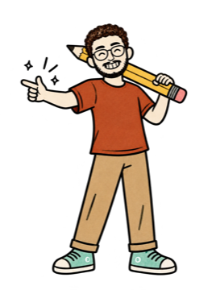

@theabhaychopra
@theabhaychopraSix questions, four agents
To message you first, an agent has to read your apps first. I asked the same six questions of each one, and answered them only from the maker's own help pages.
Menus move. Every path here was checked on 22 Oct 2026; if your screen differs, the official page linked at the end has the latest.
Muse trains on you by default
US and Canada only, 18+. Free with a usage limit.
dots keeps its own notes
ChatGPT Pro (from $100 a month), most countries except the EEA, Switzerland and the UK.
You can't watch Duet work
A US-only research preview, by waitlist, on Claude Pro and Max.
Delete doesn't mean forgotten
Disconnecting an app stops new reading. What the agent already learned usually stays. Here's what each wipe really removes.
Switches change what's used from now on. Anthropic says data already used in training stays in those models; Muse is the one whose switch also covers your past chats.
Your clients are in there too
Connect an inbox and every person in it comes along. Meta's own words: "information about you may be provided to Muse, even if you don't use Muse directly."
Ask it what it remembers

Paste this into any assistant with memory. Answers differ, and a dot can't show you its own notes, so treat the reply as a starting point.
List everything you remember about me: facts, preferences, people I've mentioned, and anything you learned from my connected apps. Group it by topic and say where each item came from (a chat, an app, or a file). Don't add guesses. Then tell me exactly where in your settings I can view, edit or delete each kind of memory.
Delete what you don't want it to keep, using the paths in this guide. For Claude, Settings → Memory lists every memory directly.
- How Muse handles your privacy, safety and securitymeta.com
- How to manage your Muse datameta.com
- Muse permissionsmeta.com
- Muse for people who don't use Musemeta.com
- Dots privacy, security, and safety FAQshelp.openai.com
- Getting started with your dothelp.openai.com
- Data controls in ChatGPThelp.openai.com
- dots: controls (Custom rules)learn.chatgpt.com
- Grok Bot: approvals, security and privacydocs.x.ai
- Grok Bot FAQdocs.x.ai
- Grok Bot changelog (Disable drafts)x.ai
- Get started with Claude Duetsupport.claude.com
- Claude chat search and memorysupport.claude.com
- Claude model-improvement settingprivacy.claude.com
Muse, dots, Grok Bot and Claude Duet belong to Meta, OpenAI, SpaceXSI (xAI) and Anthropic. The case-file scenes are AI-made (Higgsfield) from the makers' own mascots. Nobody sponsored this.

Lock it first
Two minutes in settings before you hand over your inbox.